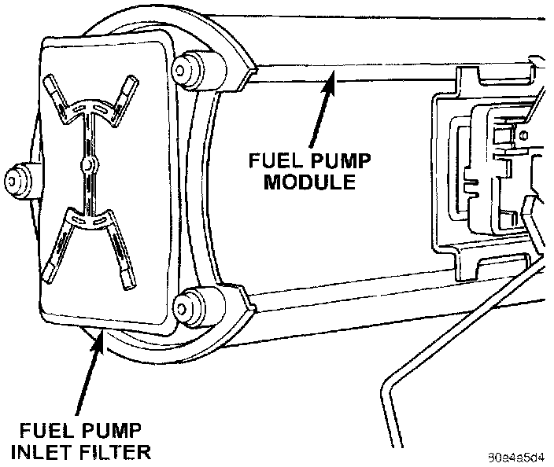

Fuel Pump Pickup Filter: Service and Repair
FUEL PUMP INLET FILTERFig. 27 Fuel Pump Inlet Filter:

The fuel pump inlet filter (strainer) is located on the bottom of fuel pump module (Fig. 27). The fuel pump module is located on top of fuel tank.
REMOVAL
1. Remove fuel tank.
2. Remove fuel pump module.
3. Remove filter by prying from bottom of module with 2 screwdrivers. Filter is snapped to module.
4. Clean bottom of pump module.
INSTALLATION
1. Snap new filter to bottom of module.
2. Install fuel pump module.
3. Install fuel tank.